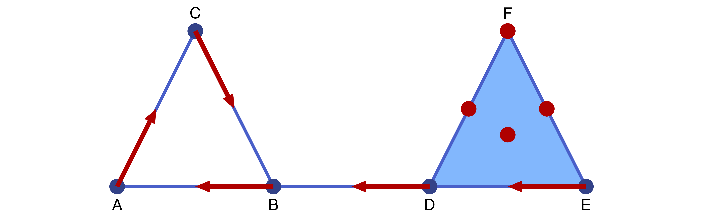

Tutorial
This tutorial explains the basic usage of the main components of ConleyDynamics. It is not meant to be exhaustive, since more details will be provided in the more indiviualized sections. Also, precise mathematical definitions will be delayed until then.
Creating Lefschetz Complexes
The fundamental mathematical object for ConleyDynamics is a Lefschetz complex. For now we note that both simplicial complexes and cubical complexes are special cases, and ConleyDynamics provides convenient interfaces for generating them.
We begin by considering the case of a simplicial complex. Recall that an abstract simplicial complex $K$ is just a collection of finite sets, called simplices, which is closed under taking subsets. In other words, every subset of a simplex is again a simplex. Each simplex has an associated dimension, which is one less than the number of its elements. One usually calls simplices of dimension 0 vertices, edges have dimension 1, and simplices of dimension 2 are triangles. It follows easily from these definitions that every simplex is the union of its vertices.
In ConleyDynamics it is easy to generate a simplicial complex. This requires two objects:
- The vertices are described by a vector
labelsof string labels for the vertices of the simplicial complex. Thus, the length of the vector equals the number of vertices, and the k-th entry is the label for the k-th vertex. - In addition, a second vector
simpliceshas to describe enough simplices so that the simplicial complex is determined. This object is a vector of vectors, and the vectorsimplices[k]describes the index values of all the vertices in the k-th simplex. These indices are precisely the corresponding locations of the vertices inlabels.
It is also possible to specify the list of simplices using a Vector{Vector{String}}, i.e., as a vector of string vectors. In this case, the entry simplices[k] is a list of the labels of the vertices.
It is expected that the labels in labels all have the same number of characters. This is due to the fact that when creating the simplicial complex, ConleyDynamics automatically creates labels for each of the simplices in $K$, by concatenating the vertex labels. Not using a fixed label size could lead to ambiguities, and will therefore raise an error message.

The following first example creates a simple simplicial complex. The complex is shown in the above figure, and it has six vertices which we label by the first six letters.
labels = ["A","B","C","D","E","F"]
simplices = [["A","B"],["A","C"],["B","C"],["B","D"],["D","E","F"]]
sc = create_simplicial_complex(labels,simplices)
fieldnames(typeof(sc))(:ncells, :dim, :boundary, :labels, :indices, :dimensions)Based on the simplex specifications, the generated simplicial complex $K$ consists of three edges connecting each of the vertices A, B, and C, a two-dimensional triangle DEF, as well as the edge BD which connects the triangle boundary and the filled triangle. The created struct sc is of type LefschetzComplex, with fieldnames as indicated in the above output. The number of cells in the complex can be seen as follows:
println(sc.ncells)14Note that the final simplicial complex has a total of seven edges, since also the edges of DEF are part of the simplicial complex. They are automatically generated by create_simplicial_complex. The dimension of K is the largest simplex dimensions, and can be seen via
println(sc.dim)2The sc struct also contains a vector of labels, which in this case takes the form
println(sc.labels)["A", "B", "C", "D", "E", "F", "AB", "AC", "BC", "BD", "DE", "DF", "EF", "DEF"]Finally, the Lefschetz complex data structure for our simplicial complex $K$ also includes the dimensions for the corresponding cells in the integer vector sc.dimensions, a dictionary sc.indices which associates each simplex label with its integer index, and the boundary map sc.boundary which will be described in more detail in Lefschetz Complexes.
Computing Homology and Persistence
Any simplicial complex, and in fact any Lefschetz complex, has an associated homology. Informally, the latter describes the connectivity structure of the object described by the simplicial complex. More precisely, the homology consists in our case of a sequence of integers, called the Betti numbers, which are indexed by dimension. There are Betti numbers $\beta_k(K)$ for every $k = 0,\ldots,\dim K$. The 0-dimensional Betti number $\beta_0(K)$ gives the number of connected components of $K$, while $\beta_1(K)$ counts the number of independent loops that can be found in $K$. Finally, $\beta_2(K)$ equals the number of cavities. In our case, we have
homology(sc)3-element Vector{Int64}:
1
1
0This means that the simplicial complex $K$ has one component, as well as one loop, and no cavities. The function homology returns a vector of integers, whose k-th entry is $\beta_{k-1}(K)$.
ConleyDynamics also allows for the computation of relative homology. In the case of relative homology, together with the simplicial complex $K$ one has to specify a closed subcomplex $K_0$. Intuitively, the relative homology $H_*(K,K_0)$ is the homology of a new space, which is obtained from $K$ by identitying $K_0$ to a single point, and then decreasing the Betti number in dimension 0 by 1. Consider for example the following command.
relative_homology(sc, [1,6])3-element Vector{Int64}:
0
2
0In this case, the subcomplex $K_0$ consists of the two vertices A and F, and so these are glued together. This leads to zero Betti numbers in dimension 0 and 2 (remember that in dimension 0 one subtracts 1), and a one-dimensional Betti number of 2. The latter is increased by one since we obtain a second loop by moving from A to F = A along the bottom three edges of $K$. Another example is the following:
relative_homology(sc, ["DE","DF","EF"])3-element Vector{Int64}:
0
1
1In this case, the subcomplex $K_0$ consists of the edges DE, DF, and EF – together will the three vertices D, E, and F which are automatically added by relative_homology. Identifying them all to one point creates a hollow two-dimensional sphere, and the relative Betti numbers reflect that fact.
filtration = [1,1,1,2,2,2,1,1,1,3,2,2,2,4]
phsingles, phpairs = persistent_homology(sc, filtration)([[1], [1], Int64[]], [[(2, 3)], [(2, 4)], Tuple{Int64, Int64}[]])Forman Vector Fields and Connecting Orbits

Finding Connection Matrices

We begin by discussion an elementary example from Mrozek & Wanner[1].
Working with Sparse Matrices
- 1Marian Mrozek, Thomas Wanner: Connection matrices in combinatorial topological dynamics, Preprint, submitted for publication, 115 pp, 2023.